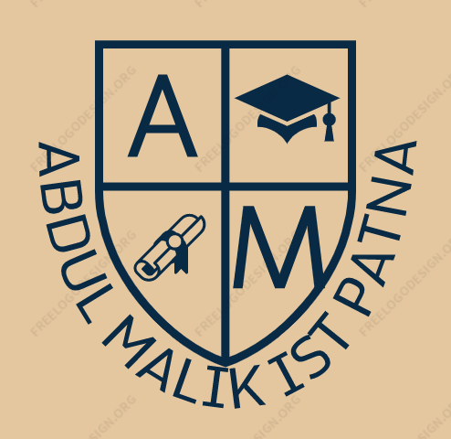

ABDUL MALIK INSTITUTE OF SCIENCE AND TECHNOLOGY PATNA
What is BSM.
- Bachelors of Sports Management offers students exposure to the various dimensions involved in Sports as a business. The course illustrates the study of Planning, supervising and conducting sports activities in international and national grounds. They are rendered the general understanding and training for polishing their interpersonal skills, organizing events and entrepreneurship skills. With a global rise in the Sports industry, candidates are prepared to build their expertise in choosing a career in sports in India as well as globally.
- The course makes the students agile to unfurl growing prospects in the sports sector as well as gain an in-depth understanding of the business surrounding it. Candidates are introduced to subjects like sales, arranging events, promotion of sports events, basic knowledge related to Sports Medicine and Nutrition, Sponsoring sports events, rules, and regulations of Training, etc. making the students proficient enough to opt for Masters in Sports Management and Ph.D. in the field. They are also skilled in other areas such as preparing presentation, writing and oral skills giving them a professional outlook towards the profession they take up.
Eligibility
- Those who have completed their 10+2 or equivalent examination in Arts stream with 45% marks from a recognized university are eligible for admission.
SEATES AND FEES
fees and seates
| course | duration | seats | fee |
| BSM | 3 years | 140 | 2.5 lakhs |
|---|
©2020 --> Website developed by Abdul Malik